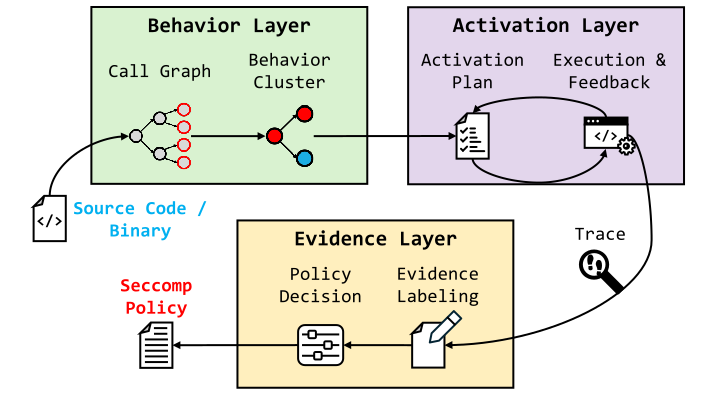

High-Level Intent
Deployment requirements describe functionality such as HTTP/3 support, TLS serving, or reverse-proxy behavior.
Archon connects high-level deployment requirements to syscall-level evidence by analyzing program structure and identifying requirement-related behaviors. It generates and iteratively refines workload and environment plans to activate these behaviors, then traces execution to classify syscalls as evidence-supported, unconfirmed, or unsupported.
01 / CHALLENGE
Deployment requirements describe functionality such as HTTP/3 support, TLS serving, or reverse-proxy behavior.
A functional requirement does not directly identify the executable code paths or system calls that realize it.
Static reachability can include irrelevant features, while generic traces may fail to activate the behavior required by the deployment.
02 / CONCEPTUAL APPROACH
Use behavior clusters over a semantic reachability graph as an intermediate representation between high-level requirements and low-level program execution.
Generate workload and environment plans intended to exercise selected behavior clusters, then refine activation hypotheses using execution feedback.
Trace execution and associate observed syscalls with selected behaviors, distinguishing evidence-supported, unconfirmed, and unsupported candidates.

Archon is intended to improve the evidence available for downstream Seccomp policy decisions. An unobserved syscall is not treated as proof that the syscall is unnecessary.